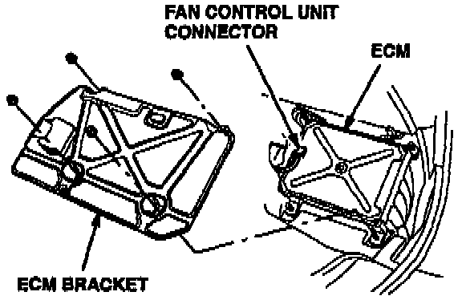
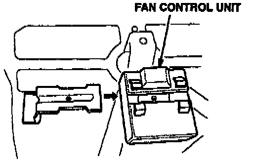
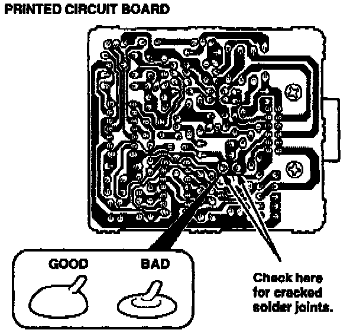

A/C - Blows Warm Air Intermittently
September 19, 1995BULLETIN NO.
95-020
YEAR
1991 - 93
MODEL
LEGEND
VIN APPLICATION
See VEHICLES AFFECTED
A/C Blows Warm Air intermittently
SYMPTOM
The air conditioner system intermittently blows warm air. This condition may be difficult to duplicate.
PROBABLE CAUSE
A cracked solder joint on the fan control unit's printed circuit board causes the air conditioner compressor and fans to intermittently turn off.
VEHICLES AFFECTED
4-Door
1991-92: All
1993: Thru VIN JH4KA7...PC016233
2-Door
1991-92: All
1993: Thru VIN JH4KA8...PC001822
CORRECTIVE ACTION
Inspect the fan control unit's printed circuit board. If necessary, replace the fan control unit with the new unit listed under PARTS INFORMATION.
1. Remove the passenger's side door sill molding and kick panel.

2. Pull back the carpeting to expose the ECM bracket, then remove the ECM bracket mounting nuts.

3. Disconnect the fan control unit connector, and remove the fan control unit from the ECM bracket.
4. Release the four tabs on the fan control unit housing with a small screwdriver, then remove the printed circuit board.

5. Inspect the two solder joints indicated with a magnifying glass to see if they are cracked.
^ If either of the solder joints are cracked, replace the fan control unit (see PARTS INFORMATION).
^ If the solder joints are not cracked, continue troubleshooting the air conditioner system to locate the cause of the problem.
PARTS INFORMATION
Fan control unit:
P/N 37735-PY3-901
WARRANTY CLAIM INFORMATION
In warranty:
The normal warranty applies.
Out of warranty:
Any repair performed after warranty expiration may be eligible for goodwill consideration by the District Technical Manager or your Zone Office. You must request consideration, and get a decision, before starting work.
Operation number: 615102
Flat rate time: 0.6 hour
Failed P/N: 37735-PY3-901
Defect code: 068
Contention code: B01